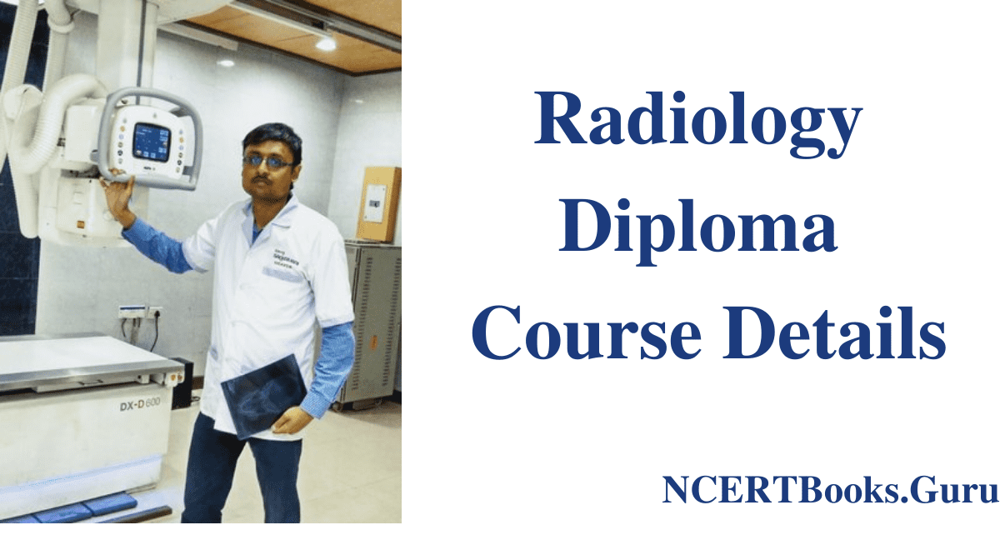
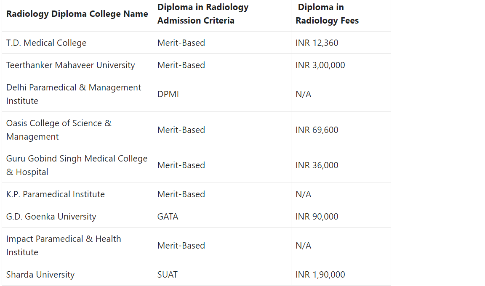

In India, a two-year undergraduate/diploma program in X-ray and radiology technology is available. The study deals with electromagnetic radiation that enters the human body and uses photographic film to portray solid things. The healthcare industry is growing, and specialists from a variety of professions are needed to ensure that a country's healthcare sector is well-managed. The electromagnetic radiations entering the human body and form images of internal structures on photographic film are the subject of this course, following the doctor's diagnosis and treatment of the problem. Radiography is the study of a medical subfield that uses Fluoroscopy, Angiography, X-ray, MRI (Magnetic Resonance Imaging, CT Scan (Computed Tomography), and PET (Positron Emission Tomography) to identify illnesses and diseases of the internal and hidden portions of the body. This programme covers both therapeutic and diagnostic radiography, which involves the use of radiation to treat malignancies and tumours. This research involves subjects and issues such as Clinical Radiotherapy, Radiobiology, Ultrasound (Sonography), Clinical Chemotherapy, Clinical Trials, and Palliative Care.
This programme can be applied by individuals who have completed their high school education in class 12 with science courses as their primary discipline and have received a minimum grade on the test. Some colleges/universities need admission exam results depending on the subjects covered and may take the scores into account.
Benefits of Diploma in Radiology/Diploma in X-Ray Each person's aims and goals for completing a Diploma in X-ray and Radio Technology degree are different. Reputable Professions: A diploma in X-ray technology is a highly sought-after sector in which students can learn and find work after completing the course. Pay Scale: Students who complete the course earn good money in both the public and private sectors. Undergraduate students who are willing to pursue a Diploma in X-ray Technology can work as X-ray technicians, assistant X-ray technicians, Radiologists, and so on. Candidates will be able to pursue a secure professional path in radiology/radiography. Following a diploma in X-ray technology, there are extremely few options. Future Scope of Diploma in Radiology/Diploma in X-Ray Students who complete the X-ray technology diploma can go on to pursue a further degree in their field. There are multiple course options available to graduates with a diploma in X-ray technology, including: Radiology (B.Sc.) Radiography Imaging Techniques (B.Sc.) Medical Laboratory Technology (B.Sc.) Radiotherapy (B.Sc.)
